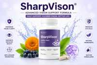

SharpVision Scam or Legit? The Shocking Truth Exposed (2026 Review)

Click Here to Check Official Batch Availability →| Product Name: | SharpVision |
| Editorial Score: | 4.8 / 5.0 ⭐⭐⭐⭐⭐ |
| Primary Purpose: | Targeted Bioactive Health & Vitality Formula (Natural Health & Dietary Supplement) |
| Manufacturing / Delivery: | c-GMP Certified, FDA-Registered Facility (USA) |
| Guarantee Shield: | 100% Risk-Free Money-Back Guarantee |
| Availability: | Official Manufacturer Site Only |
SharpVision Reviews 2026 | Is It Legit? Pros, Cons, & Real User Feedback
SharpVision is a science-backed supplement that enhances vision, supports retinal health, and safeguards against oxidative stress for long-term eye care.
SharpVision – Quick Overview | |
Product Name | SharpVision |
Type | Eye Health Supplement |
Form | Capsule |
Natural Formula | Yes, made with natural ingredients like vitamins, minerals, and herbal extracts. |
Key Benefits |
|
Ratings | Most of the SharpVision reviews have been majorly positive, with an average rating of ⭐⭐⭐⭐⭐ 4.3/5, based on 42,987 reviews |
Dosage | Take 1 capsule daily with a meal. |
Side Effects | No reported side effects |
Money-Back Guarantee | 60-day no-questions-asked money-back guarantee. |
Official Website | |
With years of experience in clinical nutrition, health coaching, and medical writing, Dr. Cassy has dedicated her career to helping customers achieve their health goals through evidence-based approaches.
In this review, she dives deep into SharpVision’s formula, benefits, and real-world effectiveness to determine whether it’s truly worth your investment. Let’s get started!🚀
What Is SharpVision?
SharpVision is a vision support supplement formulated to enhance and maintain eye health. Its primary goal is to improve visual sharpness and focus, allowing users to experience clearer, more vibrant vision in their daily activities.
This supplement works by targeting the health of the macula and retina, two critical parts of the eye responsible for sharp central vision and overall eye function.
SharpVision helps shield the eyes from oxidative stress, a common issue caused by free radicals and environmental factors like UV exposure and pollution.
By combating oxidative damage, SharpVision supports long-term eye health and may lessen the risk of age-related vision problems.
This product aims to provide holistic, natural support for maintaining eye function, ensuring that your eyes stay sharp, clear, and healthy throughout the years. It’s particularly beneficial for those looking for preventive care and enhanced visual performance.
The Science Behind SharpVision
SharpVision is formulated based on scientific research that highlights the importance of specific nutrients in maintaining and improving eye health.
The active components work synergistically to shield and support the eyes, with a focus on visual sharpness, macular health, and retinal function.
One of the main mechanisms behind SharpVision’s effectiveness is its ability to combat oxidative stress. Oxidative stress occurs when free radicals damage healthy cells, and it is particularly harmful to the eyes, which are exposed to constant environmental factors like sunlight and pollution.
By providing antioxidants, SharpVision helps neutralize these free radicals, preventing cellular damage and promoting long-term eye health.
Additionally, SharpVision supports the macula, the part of the eye responsible for sharp central vision.
By maintaining the health of the macula and retina, the supplement contributes to clearer vision and a reduced risk of age-related conditions such as macular degeneration. The result is a scientifically backed formula formulated to keep your vision sharp and protected.
SharpVision Ingredients
SharpVision contains a blend of vitamins, minerals, and plant-based extracts that work together to support and maintain healthy vision.
Here’s an overview of each ingredient and its role in the supplement:
Vitamin A (as Beta Carotene)
- Vitamin A is essential for maintaining good vision, particularly in low-light conditions. Beta-carotene, a precursor to Vitamin A, is an antioxidant that helps protect the eyes from oxidative damage and supports overall eye function.
Vitamin C (as Ascorbic Acid)
- Vitamin C is a powerful antioxidant that helps protect eye tissues from free radical damage caused by oxidative stress. It supports the health of the blood vessels in the eyes and aids in the regeneration of other antioxidants, like Vitamin E.
Vitamin E (as DL-Alpha Tocopheryl Acetate)
- Vitamin E plays a crucial role in protecting the eyes from oxidative damage. It helps protect the cells of the retina, preventing conditions like cataracts and age-related macular degeneration (AMD).
Zinc (as Zinc Oxide)
- Zinc is vital for the health of the retina and macula. It supports the enzyme functions necessary for good vision and helps protect the eyes from age-related vision issues by neutralizing free radicals.
Selenium (as Selenium AAC)
- Selenium is an essential trace mineral with antioxidant properties. It works alongside Vitamin E to protect the eye tissues from oxidative stress and may help reduce the risk of cataracts.
Copper (as Copper Gluconate)
- Copper plays a role in maintaining healthy connective tissues and is essential for the formation of collagen in the eyes. It works synergistically with zinc to support overall eye health and prevent oxidative damage.
Chromium (as Chromium Picolinate)
- Chromium helps regulate blood sugar levels, which is important for eye health, especially in individuals with diabetes. Stable blood sugar levels can help reduce the risk of diabetic eye diseases, including diabetic retinopathy.
Proprietary Blend (351 mg)
The proprietary blend includes a variety of plant extracts and compounds known for their benefits to eye health:
- Taurine: Taurine is an amino acid that helps protect the retina and supports proper eye function. It may improve visual clarity and reduce the risk of retinal damage caused by oxidative stress.
- Ginkgo (Ginkgo biloba) Leaf: Ginkgo biloba has been shown to improve blood circulation, including in the eyes. This increased blood flow helps deliver vital nutrients to the eye tissues, supporting overall eye health and enhancing visual clarity.
- Eyebright (Euphrasia officinalis) Aerial: Eyebright is an herb traditionally used to treat eye-related issues. It may help reduce eye inflammation, relieve symptoms of eye strain, and support overall eye health.
- Grape (Vitis vinifera) Seed Extract: Grape seed extract is rich in antioxidants, particularly proanthocyanidins, which protect the eyes from oxidative stress. It may also improve blood flow to the eyes, supporting overall eye function and visual acuity.
- Coleus Forskohlii (Coleus forskohlii) Root: Coleus forskohlii is used to improve circulation and promote healthy blood flow, including to the eyes. It is thought to support retinal health and may help reduce intraocular pressure, which can benefit individuals with glaucoma.
- Alpha Lipoic Acid: Alpha Lipoic Acid is a potent antioxidant that helps combat oxidative damage in the eyes. It supports the regeneration of other antioxidants and may help protect against conditions such as cataracts and macular degeneration.
- Rutin (from Sophora japonica): Rutin is a flavonoid that strengthens blood vessels, supporting circulation to the eyes. It may help reduce the risk of retinal damage and improve overall eye function.
- Quercetin (from Sophora japonica): Quercetin is another powerful antioxidant that helps protect the eyes from oxidative stress. It supports the health of the retina and macula and may reduce inflammation that can lead to eye diseases.
- Bilberry (Vaccinium myrtillus) Fruit Extract: Bilberry extract is known for its high content of anthocyanins, which protect the retina from oxidative damage. It has been traditionally used to improve night vision and overall eye health.
- Saffron (Crocus sativus) Stigmas Extract: Saffron is rich in antioxidants like crocin and safranal, which help protect the eyes from oxidative stress and inflammation. It has been shown to support macular health and may improve visual acuity in individuals with age-related vision decline.
- Lycopene: Lycopene is a carotenoid that supports eye health by protecting against oxidative damage. It may help reduce the risk of cataracts and age-related macular degeneration (AMD).
- Lutein from Marigold (Tagetes erecta) Flower: Lutein is a potent antioxidant that filters harmful blue light and protects the retina from oxidative damage. It has been shown to improve visual performance, especially in low-light conditions.
- Zeaxanthin: Zeaxanthin works alongside lutein to protect the eyes from oxidative stress. It supports retinal health and may help prevent conditions like macular degeneration and cataracts.
- Astaxanthin: Astaxanthin is a powerful antioxidant that protects the eyes from free radicals and inflammation. It may improve visual function, reduce eye fatigue, and support overall eye health.
Benefits
SharpVision offers a range of benefits to maintain and enhance overall eye health. By combining key vitamins, minerals, and potent antioxidants, it supports various aspects of vision, from sharpness to long-term protection.
- Enhanced Visual Sharpness & Focus: The blend of essential nutrients works together to improve visual acuity, ensuring clearer, sharper vision for both near and distant objects. SharpVision helps you focus better on daily tasks like reading, driving, or using electronic devices.
- Supports Macular & Retinal Health: With ingredients like lutein, zeaxanthin, and zinc, SharpVision promotes the health of the macula and retina, critical areas of the eye responsible for sharp central vision. This can help reduce the risk of age-related macular degeneration (AMD) and other retinal conditions.
- Protection Against Oxidative Stress: The powerful antioxidants in SharpVision, such as vitamin C, vitamin E, and grape seed extract, protect your eyes from oxidative stress caused by free radicals. This helps prevent cellular damage and supports long-term eye function.
- Improved Night Vision: Ingredients like bilberry extract and vitamin A help support night vision by enhancing the health of the retina, allowing for better visual performance in low-light conditions.
- Reduced Eye Strain: SharpVision’s formulation, which includes eyebright and ginkgo biloba, may help alleviate eye strain from prolonged screen exposure or environmental factors, providing relief and comfort.
- Supports Overall Eye Health: The combination of vitamins, minerals, and plant-based extracts provides comprehensive support for your eyes, helping maintain healthy vision over the years and protecting against common age-related vision issues.
Pros
- Enhances visual sharpness and focus.
- Supports macular and retinal health.
- Protects against oxidative stress with antioxidants.
- Improves night vision.
- Reduces eye strain, especially from screen use.
- Supports overall eye health and function.
- Helps protect against age-related vision issues.
- Contains essential vitamins and minerals for eye care.
- Plant-based ingredients provide natural support.
- Includes ingredients like bilberry and saffron for added vision benefits.
- Helps maintain healthy intraocular pressure.
- Provides long-term eye health support with regular use.
Cons
- Only available on the official website.
- Results may vary, and benefits may take time to show.
- Requires consistent daily use for maximum effectiveness.
How to Use?
Take 1 Capsule Daily
- Simply take one capsule of SharpVision with a glass of water, preferably with a meal to enhance absorption and minimize any potential stomach discomfort.
Consistent Use for Best Results
- For optimal eye health benefits, take the capsule daily as part of your regular routine. Consistent use is key to supporting long-term vision and protecting against age-related eye issues.
Are There Any Side Effects?
No side effects have been reported with SharpVision when used as directed. The supplement is made from natural active components and essential nutrients that support eye health, and it is generally considered safe for most customers.
However, as with any supplement, it is always recommended to consult with a healthcare professional before starting a new regimen, especially for those with existing health conditions or those taking medications.
If you experience any unusual symptoms, discontinue use and seek medical advice. Following the recommended dosage ensures a safe and beneficial experience.
Is SharpVision a Scam or Legit?
✅ Yes, SharpVision is legit.
SharpVision is a legitimate eye health supplement formulated with a blend of vitamins, minerals, and natural extracts backed by scientific research.
It supports visual sharpness and macular health and safeguards against oxidative stress. The active components are well-known for their positive effects on eye health, and no side effects have been reported.
With consistent use, SharpVision can promote long-term eye function and clear vision.
❌ No, SharpVision is not a scam.
SharpVision is made from trusted active components and has shown benefits for eye health. There is no evidence to suggest it is a scam, making it a reliable choice for vision support.
SharpVision Customer Reviews & Complaints
SharpVision steps up as a unique blend that has captured the hearts of many, boasting an impressive customer rating of ⭐⭐⭐⭐⭐ 4.3/5 from over 42,987 reviews.
⭐Positive Reviews
John P. (USA)
⭐⭐⭐⭐⭐ 5/5
“I’ve been using SharpVision for a month now, and I can already see a noticeable improvement in my vision. My focus is sharper, and I experience less eye strain after long hours on my computer. Highly recommend it!”
Emily R. (UK)
⭐⭐⭐⭐⭐ 4.5/5
“I’ve always struggled with night vision, but since taking SharpVision, I feel much more confident when driving at night. I’ve noticed a substantial improvement in clarity and overall eye health.”
Carlos M. (Canada)
⭐⭐⭐⭐⭐ 5/5
“SharpVision has been a game-changer for me. I work in front of a screen all day, and it has really helped with eye fatigue. My eyes feel more relaxed, and my vision seems clearer overall.”
⚠️Common Complaints
“Takes Time to Show Results”
Some customers mention that it took a few weeks to notice improvements in their vision. While they appreciated the product’s effects, they recommend patience for optimal results.
“Capsules May Be Too Large for Some”
A few users found the capsules larger than expected, making them harder to swallow. Despite this, they found the supplement efficient and worth the effort.
Who Should Pick & Skip SharpVision?
★ Pick SharpVision if…
- Experiencing early signs of vision decline
- Work long hours on computers or digital screens
- Need better vision in low light or at night
- Concerned about age-related eye issues
- Prefer natural ingredients for eye support
✗ Skip SharpVision if…
- Under 18 years old
- Pregnant or breastfeeding women
- Allergic to any listed ingredients
Is SharpVision Worth Trying?
Yes, SharpVision is worth trying for those looking to support and enhance their eye health.
Its scientifically backed formula combines essential vitamins, minerals, and antioxidants to support visual sharpness, retinal and macular health, and protection against oxidative stress.
With active components such as lutein, zeaxanthin, and bilberry, it grants extensive support for long-term eye health. If you are concerned about age-related vision problems, eye strain, or want to maintain sharp vision, SharpVision may be a beneficial addition to your daily schedule.
Money Back Guarantee
SharpVision offers a 60-day, no-questions-asked money-back guarantee. If you’re not satisfied with the results, simply return the product within 60 days of purchase for a full refund.
This risk-free offer lets you try SharpVision with confidence, knowing your purchase is protected.
Whether you experience no noticeable improvements or simply change your mind, you can get your money back, making it a hassle-free way to support your eye health.
Pricing
SharpVision offers flexible pricing options to suit different needs:
- Basic Package (1 Bottle – 30 Day Supply): $79 per bottle, save $200, total $79 + $19.99 shipping.
- Most Popular Package (3 Bottles – 90 Day Supply): $59 per bottle, save $330, total $177 + free shipping.
- Best Value Package (6 Bottles – 180 Day Supply): $49 per bottle, save $780, total $294 + free shipping.
Where to Buy?
You can purchase SharpVision exclusively through itsofficial website. This ensures you receive the genuine product, access to current promotions, and the 60-day money-back guarantee. Purchasing from authorized retailers or third-party sellers may not offer the same assurances.
To buy SharpVision, visit the official website and select the package that best suits your needs. Choose from options such as the 1-bottle, 3-bottle, or 6-bottle supply, each with different pricing and shipping benefits.
By ordering directly from the official site, you can be confident in the authenticity of your purchase and enjoy the full benefits of the product.
Conclusion
In conclusion, SharpVision is an exceptional supplement for anyone looking to support and enhance their eye health.
Final Score | ⭐⭐⭐⭐⭐ 4.3/ 5 |
Best For | Adults seeking natural eye health & vision support |
Formula | Lutein, Zeaxanthin, Bilberry, Vitamin A, C, E, Zinc, Selenium |
Refund Policy | 180-day, no-questions-asked money-back guarantee |
Customer Base | 42,987 users on the official site with an average rating 4.3/5 |
It offers a extensive approach to maintaining sharp vision, protecting the retina, and reducing the risks of age-related eye issues.
As an expert, I personally recommend trying SharpVision if you’re looking to improve your visual sharpness, lessen eye strain, or shield against oxidative stress.
Frequently Asked Questions
How long will it take to see results?
Results may vary depending on individual factors, but consistent use over time will yield the best results. For maximum effectiveness, give it at least 30-60 days.
What makes SharpVision different from other eye health supplements?
SharpVision stands out for its unique blend of scientifically supported active components, including high-potency antioxidants, vitamins, and minerals, specifically formulated to target key areas of eye health, such as visual sharpness, macular health, and oxidative stress.
How can I contact SharpVision customer support?
You can reach SharpVision customer support via email at support@getsharpvision.com or by phone at +1 323-205-7463 (Monday to Friday).
Is SharpVision effective for people with eye strain from digital screens?
Absolutely! The antioxidant-rich active components, including ginkgo biloba and taurine, help lessen eye strain and fatigue, which is particularly beneficial for customers who spend long hours in front of digital screens.
Can SharpVision improve my color vision?
SharpVision may help enhance color perception by supporting the health of the retina and macula. active components like lutein and zeaxanthin filter harmful blue light and shield against retina damage, potentially improving color distinction and overall vision.
.